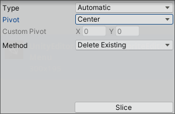

Jocs de plataformes amb Unity
1. Introducció
En aquesta segona sessió de Unity anem a sentar les bases per a la creació d’un joc 2D de plataformes. Tot el que veiem, serà aplicable també a jocs 3D.
Partirem d’un projecte de tpus 2D buit. Quan el carreguem, vorem que la interfície és la mateixa que pera 3D, amb la diferència que la vista de l’escena es mostra en 2D (tot i que podem canviar-la a 3d).
El primer que farem serà afegir alguns GameObjects a l’escena, junt amb els components més bàsics, per començar a treballar les físiques i la interacció, i posteriorment ja anirem enriquint els gràfics i depurant alguns aspectes.
Com a base de la sessió, i per ampliar coneixements, tenim curs d’openWebinars Unity i Videojuegos 2D, de José Vázquez.
2. Creant l’escena i el personatge
El primer que farem serà configurar una escena inicial i el nostre personatge, al que posteriorment dotarem de propietats, físiques, etc.
Cal tindre en compte que com anem a fer un joc 2D, els GameObjects que utilitzarem es troben a la categoria 2D Object. Dins d’esta categoria podem vore com tenim diversos elements que podem afegir a l’escena. Començarem pels més senzills, els sprites.
Sprite
Un sprite és un tipus de mapa de bits que es crea en la pantalla de l’ordinador a partir d’una imatge. Aplicat al món dels videojocs 2D són un conjunt d’imatges que representen de forma gràfica personatges, objectes o part d’ells, i creen efectes de moviment o canvis d’estat.
En Unity, els sprites són objectes gràfics 2D, als que podrem associar-los imatges, i que podríen comparar-se a les textures dels polígons quan treballem en 3D.
Anem a crear un objecte 2D de tipus Sprite, al que anomenarem Plataforma1. Quan el creem, aquest GameObject no serà visible, ja que haurem d’associar-li una imatge. Si ens fixem en l’Inspector, veurem que aquest té, per una banda el component Transform que han de tindre tots els GameObjects per tal de poder posicionar-los a l’escena, i també té un component Sprite Renderer. Aquest component serà el que li dóne forma i color a l’sprite. A més, haurem d’afegir-li un component de tipus Box Collider 2D, de manera que l’objecte siga capaç de detectar col·lisisons. Dins aquest component podem ajustar diversos paràmetres, entre ells, les vores que tindrà el propi collider.
Dins les opcions del component Collider tenim, entre d’altres l’opció de Is Trigger. Si marquem aquesta opció, en lloc de xocar amb altres elements, el que farà és llançar un esdeveniment, que podrem capturar i reaccionar a ell. Per exemple, si volem detectar quan el personatge passa per determinat lloc per llançar-li un projectil, podem fer-ho d’aquesta manera.
Bñe, Una vegada creada la plataforma, sobre la mateixa base, podem crear algunes plataformes més (podem duplicar-les amb Ctrl + D), i variar-los la posició i el tamany, per crear una escena més completa.
en segon lloc, crearem el personatge, i ho farem de la mateixa manera, com un sprite amb detecció de col·lissions, i a més, amb un component Rigibody 2D:
Pel que fa a les propietats del rigibody, veiem que podem ajustar molts paràmetres, entre ells la gravetat, la massa de l’objecte o la forma en què es detecten les col·lissions, entre d’altres. Amb aquesta última podem triar entre Contínua, amb un major consum de recursos o Discreta, amb menys recursos, però amb la possibilitat que no es detecte correctament si l’objecte va molt de pressa. Un altre aspecte interessant d’aquest component són les Constraints. Amb elles podem determinar si un objecte va a quedar-se aturat bé en l’eix x o y, o si volem o no que realitze rotacions sobre l’eix z, amb el qual, el personatge podría quedar-se cap per avall si tenim activat.
Més o menys, el resultat de l’escena vindria a ser alguna cosa semblant a:
Si reproduïm l’escena polsant a Play, vorem com l’objecte cau (perquè és un rigibody 2D i per tant li afecta la física 2D), i es manté a la plataforma, ja que ambdos elements tenen un component Box Collider 2D. Proveu a deixar caure el personatge a prop del cantó d’una plataforma i observeu-ne el seu comportament, si tenim activada o no la Constraint de la rotació sobre l’eix z.
Fixeu-vos també que el que col·lissiona són, evidentment els colliders, de manera que pot donar la sensació que l’sprite del personatge està sobrevolant la plataforma. Recordem que podem ajustar els colliders per a que aquest efecte desaparega, però de moment, no ens preocuparem d’això, i ho ajustarem quan ja tinguem definits els gràfics per a cada sprite.
3. Movent el personatge
Per tal de moure el personatge, ho farem mitjançant un script. Per a això, en la carpeta del projecte, ens crearem una nova carpeta per a Scripts, i dins d’aquesta, afegirem un nou script anomenat Personatge.cs (l’extensió la posa autompaticament). Aquest script, per defecte té el següent codi autogenerat:
using System.Collections;
using System.Collections.Generic;
using UnityEngine;
public class Personatge : MonoBehaviour
{
// Start is called before the first frame update
void Start()
{
}
// Update is called once per frame
void Update()
{
}
}
Recordem que totes les classes que generem, descendiran de la classe MonoBehaviour, que representa els GameObjects, i fa que aquest script es puga associar (attach) com a component a un objecte.
A més, se’ns han generat els mètodes Start i Update. El primer serveix per inicialitzart l’objecte, mentre que el segon s’invoca en cada generació de frames dins el Game Loop o bucle del joc.
Game Loop
Si havérem de programar el joc sense fer ús de cap motor (recordeu si l’heu feta la pràctica dels óssos i la mel de PSP), afegiríem la major part del codi dins un bucle de l’estil
while (true){...}. Dins aquest bucle ens encarregaríem de recalcular les posicions dels personatges, actualitzar-les, comprovar si hi ha col·lissions i tornar a dibuixar tota l’escena.En Unity, i en general en tots els motors de jocs, aquest bucle s’anomena el Game Loop. La forma de treballar amb aquest Game Loop és a través de la captura d’events. Durant aquest bucle, el motor passa per diferents fases (inicialització, actualització, detecció d’entrades, aplicació de físiques, renderització, entre molts altres). En cadascuna d’aquestes fases es llancen events que podem capturar des dels nostres scripts, per tal d’afegir el comportament desitjat als nostres objectes.
Podeu donar una ullada a l'Script Lifecicle Flowchart disponible a la documentació de Unity en:
El que farem, per tal de moure el personatge, serà, en cada frame (al mètode Update) vore si s’estan prement les tecles o no. Per a això utilitzarem la classe Input, que ens permet detectar les pulsacions de teclat i l’entrada en general. Veiem el codi complet dle mètode Uodate i passarem a analitzar-lo:
void Update()
{
if (Input.GetKey(KeyCode.A) || Input.GetKey(KeyCode.LeftArrow)){
//Movem a l'esquerra
transform.Translate(new Vector2(-0.1f, 0.0f));
}
if (Input.GetKey(KeyCode.D) || Input.GetKey(KeyCode.RightArrow)){
//Movem a la dreta
transform.Translate(new Vector2(0.1f, 0.0f));
}
if (Input.GetKeyDown(KeyCode.W) || Input.GetKeyDown(KeyCode.UpArrow)){
//Botem
if (GetComponent<Rigidbody2D>()!=null){
GetComponent<Rigidbody2D>().AddForce(new Vector2(0.0f, 300.0f));
}
}
}
3.1. Moviment a esquerra i dreta
Per tal d’anar a un o a altre costat, fem ús del mètode Input.GetKey, especificant com a artugment les claus de les tecles que volem capturar (KeyCode.A, KeyCode.LeftArrow, KeyCode.D, KeyCode.RightArrow). Observeu com, per a cada tipus de moviment podem detectar una o altra tecla (la A o el cursor a l’esquerra) amb un ||.
Cal tindre en compte que amb GetKey detectem l’event de mantindre polsada una tecla, a diferència del mètode GeyKeyDown, que utilitzarem després, i que detecta només quan es prem la tecla.
Ara, per tal d’aplicar el moviment, el que farem serà aplicar-li una transformació de moviment, consistent en traslladar aquest a l’esquerra. En Unity, i en general en qualsevol sistema de coordenades, aquests moviments s’expressaran mitjançant vectors .
En el camp de la física i les matemàtiques, un vector és un segment o recta en l’espai que parteix d’un punt cap a altre; té una direcció i un sentit, i expressen magnituds vectorials.
Quan treballem en informàtica gràfica, els vectors (i les matrius) ens són d’utilitat per tal d’aplicar transformacions geomètriques, com puguen ser trasllacions, rotacions o escalats de figures.
Al nostre cas, per tal de moure l’objecte a l’esquerra, li afegirem un moviment de trasllació (transform.Translate) amb un vector (-0.1, 0.0) (new Vector2(-0.1f, 0.0f)).
Per a moure el personatge a la dreta, el procediment és el mateix, amb la diferència que el nou vector serà (0.1, 0.0).
També podríem haver utilitzat Vector3 en lloc de Vector2, que s’utilitza per a 3D, sense afegir la component Z i interpretaría que en aquest cas la component és 0.
3.2. Fent que bote el personatge
Per tal de fer que el personatge bote, utilitzarem les tecles W, i UpArrow. La primera diferència respecte a quan va a esquerra o dreta és que només volem que es detecte la tecla quan s’ha polsat, per a que el personatge bote. Per això utilitzarem GetKeyDown, en lloc de GetKey, ja que si no, el personatge botaria mentre mantinguérem la tecla polsada. Així doncs, la captació de l’Input serà:
if (Input.GetKeyDown(KeyCode.W) || Input.GetKeyDown(KeyCode.UpArrow))
Ara anem a vore com fer el bot. Per a això, caldrà donar-li un impuls cap amunt al personatge, cosa que aconseguirem gràcies al component Rigibody, que com sabem, aplica la física a l’objecte. Veiem com fer-ho.
Des d’un script podem accedir a tots els components que té associats el GameObject sobre el que s’aplica l’script. Per obtenir la referència a un component fem ús de GetComponent, especificant el tipus <T>, en aquest cas <Riginody2D>. Amb aquesta referència al component, podem manipular els seus valors i fer ús de mètodes específics que aquests ens ofereixen per al codi. Aixó, anem a fer ús del mètode AddForce, que afig un impuls (una força), cap amunt, tot i que l’objecte seguirà sent atret per la gravetat, de manera que simule el bot. Per indicar la direcció del bot ho fem amb un vector en 2D, fent ús de new Vector2(forçaEnX, forçaEnY). La quantitat que posem de força dependrà dels valors de la gravetat i la massa de l’objecte.
GetComponent<Rigidbody2D>().AddForce(new Vector2(0.0f, 300.0f));
Cal anar amb compte si el component que busquem està o no associat a l’objecte, per tal d’evitar una excepció de tipus MissingComponentException. Per tal de previndre açò podem fer:
if (Input.GetKeyDown(KeyCode.W) || Input.GetKeyDown(KeyCode.UpArrow)){
if (GetComponent<Rigidbody2D>()!=null){
GetComponent<Rigidbody2D>().AddForce(new Vector2(0.0f, 300.0f));
}
}
Ara només ens quedaría afegir aquest component al nostre personatge, i vore com funciona:
Si s’adoneu, el personatge pot botar en l’aire, ja que no comprovem que per a botar haja d’estar en terra. Ho vorem al següent apartat. De tota manera, anem a aprofitar per observar el comportament de la detecció de col·lissions. Proveu a botar diverses vegades en l’aire fins que el personatge arribe a una altitud considerable (sobre 200 d’altura o més) i deixeu-lo caure. Proveu-ho tant amb el tipus de col·lissió Discrete com Continuous del component Rigibody2D i veieu les diferències.
3.3. Evitant els bots en l’aire amb etiquetes
Les etiquetes ens permetien etiquetar objetes, de manera que podem diferenciar-los mitjançant el codi. Recordeu que per crear noves etiquetes, ho podem fer a la configuració del projecte (Edit > Project Settings > Tags and Layers) o des del mateix desplegable d’assignar etiqueta, amb l’opció Add Tag.
Així doncs, anem a etiquetar el GameObject que fa de personatge com a Player, que és una etiqueta existent, i anem a crear una etiqueta nova, que anomenarem plataforma, i que assignarem a totes les plataformes que tenim (podem seleccionar-les totes d’una i afegir l’etiqueta).
Per tal de gestionar si el personatge està botant, crearem una propietat booleana per a la classe i que inicialitzarem a fals:
public class Personatge : MonoBehaviour
{
private bool jumping;
void Start() {
jumping=false;
}
...
}
Amb això, cada vegada que intentem botar, caldrà comprovar que no s’està botant, per tant, quan detectem la pulsació de tecla per al bot, farem:
if (Input.GetKeyDown(KeyCode.W) || Input.GetKeyDown(KeyCode.UpArrow)){
//Botem
if (GetComponent<Rigidbody2D>()!=null && !jumping){
jumping=true;
GetComponent<Rigidbody2D>().AddForce(new Vector2(0.0f, 300.0f));
}
}
Com veiem, hem afegir la comprovació que no estiga botant abans d’afegir l’impuls, i l’hem establert a true quan fem el bot.
Amb això ja ho tindrem quasi tot, excepte que només podrem botar una vegada, ja que no es restableix el valor de jumping a false. Quan farem això? Quan detectem que acaba el bot? Quan l’objecte arribe a terra, o dit d’altra manera, col·lissione amb un objecte que estiga etiquetat com a plataforma.
Per tal de detectar les col·lissions des de codi disposem de tres mètodes:
OnCollisionEnter: indica quan es produeix (o s’entra) en la col·lissió; al nostre cas, seria quan el personatge toca terra;OnCollisionStay: indica si s’està produint (mantenint) la col·lissió; al nostre cas, es dispararia sempre que el personatge estiguera en una plataforma;OnCollisionExit: indica quan s’abandona o s’ix de la col·lissió; que al nostre cas, seria quan el personate comença el bot i deixa d’estar en contacte amb la plataforma.
Per tant, el que ens interessa és el mètode OnCollissionEnter, de manera que quan toque terra, puguem dir que no està botant, i que per tant pot fer un nou bot. El codi per a això serà el nou mètode:
void OnCollisionEnter2D(Collision2D _col){
//Entra si dos objetos colisionan por primera vez
if(_col.gameObject.tag == "plataforma")
jumping = false;
}
El mètode OnCollisionEnter2D es dispara quan dos objectes 2D col·lissionen per primera vedaga, i rep un objecte de tipus Collision2D que té informació sobre l’objecte amb què s’ha col·lissionat (semblant a quan rebem un esdeveniment que hem capturat en Javscript, per exemple). En aquest cas, a l’objecte col·lissió l’hem anomenat _col. Dins el codi, el que fem és obtenir el gameObject amb què hem col·lissionat i d’aquest obtenim el tag etiqueta. Si l’etiqueta és plataforma, restaurarem el valor de jumping a false, amb el que ja podrem tornar a botar.
3.4. Algunes variacions
Doble bot
Si volem afegir un doble bot, podem mantenir un comptador dels bots consecutius que porta:
public class Personatge : MonoBehaviour
{
private bool jumping;
private int numBots;
// Start is called before the first frame update
void Start()
{
jumping=false;
numBots=0;
}
...
}
Per altra banda, caldrà vore, quan botem, si el número de bots que ha donat és inferior a 2, i si no és, permetre que es torne a botar. A més, a cada bot, actualitzarem aquest comptador:
// Doble bot
if (Input.GetKeyDown(KeyCode.W) || Input.GetKeyDown(KeyCode.UpArrow)){
//Botem
if ((GetComponent<Rigidbody2D>()!=null) && (!jumping || numBots<2) ){
jumping=true;
numBots++;
GetComponent<Rigidbody2D>().AddForce(new Vector2(0.0f, 300.0f));
}
}
A més, caldrà tindre un xicotet detall, i és que quan el personatge col·lissiona amb una plataforma per la part de baix d’aquesta, tal i com ho tenim interpretaria que ha tornat a terra, i reinicialitzaria els bots. Per evitar això, podem bé comprovar la velocitat relativa a la que s’ha col·lissionat, o el vector normal a la superfície en què s’ha col·lissionat. En ambdos casos, el valor d’aquests haurà de ser positiu:
void OnCollisionEnter2D(Collision2D _col){
if(_col.gameObject.tag == "plataforma" && _col.contacts[0].normal.y>0){
jumping = false;
numBots=0;
}
}
Bot en un o altre sentit
Altra variació que podríem afegir, per exemple sería que no es puguera controlar el bot en l’aire, per donar un efecte més realista. Per a això, caldría comprovar que no s’està botant metre es vol girar a un o altre costat, i controlar quan es vol fer un bot cap a un o altre sentit, mitjançant la pulsació de les tecles amunt i esquerra o dreta:
// Bot en un o altre sentit
public class Personatge : MonoBehaviour
{
private bool jumping;
// Start is called before the first frame update
void Start()
{
jumping=false;
}
// Update is called once per frame
void Update()
{
if (Input.GetKey(KeyCode.A) || Input.GetKey(KeyCode.LeftArrow)){
//Movem a l'esquerra
if (!jumping) transform.Translate(new Vector2(-0.1f, 0.0f));
}
if (Input.GetKey(KeyCode.D) || Input.GetKey(KeyCode.RightArrow)){
//Movem a la dreta
if (!jumping) transform.Translate(new Vector2(0.1f, 0.0f));
}
if ((Input.GetKeyDown(KeyCode.W) && Input.GetKey(KeyCode.A)) || (Input.GetKeyDown(KeyCode.UpArrow)&&(Input.GetKey(KeyCode.LeftArrow)))){
//Botem
if (GetComponent<Rigidbody2D>()!=null && !jumping){
jumping=true;
GetComponent<Rigidbody2D>().AddForce(new Vector2(-300.0f, 350.0f));
}
}
if ((Input.GetKeyDown(KeyCode.W) && Input.GetKey(KeyCode.D)) || (Input.GetKeyDown(KeyCode.UpArrow)&&(Input.GetKey(KeyCode.RightArrow)))){
//Botem
if (GetComponent<Rigidbody2D>()!=null && !jumping){
jumping=true;
GetComponent<Rigidbody2D>().AddForce(new Vector2(300.0f, 350.0f));
}
}
// És important detectar açò després dels bots cap a un o altre costat, ja que en cas contari sempre executaria aquest primer!!
if (Input.GetKeyDown(KeyCode.W) || Input.GetKeyDown(KeyCode.UpArrow)){
//Botem
if (GetComponent<Rigidbody2D>()!=null && !jumping){
jumping=true;
GetComponent<Rigidbody2D>().AddForce(new Vector2(0.0f, 350.0f));
}
}
}
void OnCollisionEnter2D(Collision2D _col)
{
if(_col.gameObject.tag == "plataforma" && _col.contacts[0].normal.y==1){
jumping = false;
}
}
}
4. Afegint enemics
Per als enemics anem a fer ús dels prefabs. Crearem un enemic abans que res, i a partir d’ell generarem un prefab, de manera que pogam crear vàries instànvies a partir d’aquest mitjançant codi.
Per tal de generar l’enemic, farem de manera semblant al personatge:
- Crearem un Sprite en la posició (0, 3.24) i d’escala (5, 5)
- El component Sprite Renderer serà de tipus UISprite i de color roig,
- Li afegim un component Rigibody 2D, al que congelem la rotació en Z,
- Li afegim un Box Collider 2D
Ara ens quedarà afegir-li comportament, ja que de moment, només es veu afectat per la gravetat. Per a això, crearem un script Enemic amb el següent contingut:
using System.Collections;
using System.Collections.Generic;
using UnityEngine;
public class Enemic : MonoBehaviour
{
protected float direccio;
// Start is called before the first frame update
protected bool triaDireccio(){
// Decideix si anar a esquerra o dreta
if (Random.Range(0.0f, 1.0f)<0.5f) return true;
else return false;
}
void Start()
{
direccio=0.0f;
}
// Update is called once per frame
void Update()
{
transform.Translate(new Vector2(direccio, 0.0f));
}
void OnCollisionEnter2D(Collision2D _col)
{
// Cada vegada que toquem terra, decidim si anar a dreta o esquerra
if(_col.gameObject.tag == "plataforma"){
if (triaDireccio())
direccio=0.1f;
else direccio=-0.1f;
}
}
}
Hem afegit un mètode protegit a dins anomenat triaDireccio, que ens retorna aleatòriament True o False, fent ús del mètode Random.Range:
protected bool triaDireccio(){
// Decideix si anar a esquerra o dreta
if (Random.Range(0.0f, 1.0f)<0.5f) return true;
else return false;
}
Aquest mètode l’utilitzem quan l’objecte enemic col·lissione amb una plataforma, de manera que cada vegada que toque terra, decidirà si va a dreta o esquerre, modificant el valor de direccio.
Finalment, recordeu que heu d’afegir aquest script com a un component més de l’enemic!.
Amb açò, ja tindrem l’enemic tipus creat, a partir del qual podem crear el prefab. Per a això, creem una nova carpeta Prefabs dins d'Assets i l’arrosseguem a dins. Observeu com canvien les icones de l’objecte en estos moments.
Eliminant enemics
Tal i com ho tenim plantejat, quan els enemics ixen de l’escena, aquests segueixen caient infinitament. Necessitem doncs d’algun mecanisme que ens permeta eliminar els enemics que isquen de l’escena. Per a això, fem ús d’un GameObject, que situarem baix l’escena, i que s’encarregarà d’eliminar tots els enemics que col·lissionen amb ell.
I li afegirem com a component un nou Script que anomenarem DestructorEnemics.cs. Fixeu-vos en el mètode OnCollisionEnteri els comentaris que hi apareixen:
using System.Collections;
using System.Collections.Generic;
using UnityEngine;
public class DestructorEnemics : MonoBehaviour
{
// Start is called before the first frame update
void Start() { }
// Update is called once per frame
void Update() { }
void OnCollisionEnter2D(Collision2D _col)
{
if (_col.gameObject.tag == "Enemic")
{
// Desactivem l'enemic, per a que ja no tinga
// cap interacció
_col.gameObject.SetActive(false);
// I l'eliminem, amb una xicoteta pausa, ja que
// pot ser un procés costós
Destroy(_col.gameObject, 0.5f);
}
}
Creant nous enemics
Fins ara hem creat un enemic i l’hem convertit en un prefab, de manera que el GameObjecte que teníem a l’escena ara és una instància d’aquest prefab.
El que ara volem és generar, mitjançant codi diferents enemics, tots amb el comportament d’aquest primer que hem creat, o el que és el mateix, volem generar instàncies d’aquest prefab.
Per a això, creemm un GameObject buit que anomenarem GeneradorEnemics, i al que afegirem el següent Script:
using System.Collections;
using System.Collections.Generic;
using UnityEngine;
public class GeneradorEnemics : MonoBehaviour
{
public GameObject enemicOriginal;
protected void ixEnemic(){
// Decideix ix o no un enemic
if (Random.Range(0.0f, 100.0f)<1.0f) {
GameObject.Instantiate(enemicOriginal, transform.position, transform.rotation);
}
}
// Start is called before the first frame update
void Start()
{
}
// Update is called once per frame
void Update()
{
ixEnemic();
}
}
Fixem-nos en un parell de detalls importants:
- Hem definit, com a public un GameObject al que li hem dit enemicOriginal.
- El mètode Update, en cada iteració invoca el mètode
ixEnemic(), que el que fa és amb un 1% de probabilitat (en cada frame!) instanciar un GameObject, a partir d'enemicOriginal, en la posició i transformacions de l’objecte actual (GeneradorEnemics).
Fixeu-vos que amb açò, no li diem que genere objectes de tipus enemic, sinò GameObject en general. Si tornem ara a la interfície, veurem com, en el component d’aquest Script que hem afegit, ens apareix l’opció d’establir qui és aquest Enemic Original:
Amb això, el que farem és arrossegar el prefab de l’enemic que hem creat a aquest buit None (Game Object) per a que siga aquest tipus de prefab el que es genere. Comproveu ara també que el prefab té la posició a (0, 0), per tal que comence en la pròpia posició del generador.
4.1. Atacant als enemics
Anem a proporcionar al joc dos possibles formes d’atacar els enemics: llançant-los algun tipus d’objecte o botant-los a sobre. Per a això farem el següent:
Llançant objectes
Per tal d’implementar els dispars, crearem un Prefab, a partir del qual instanciem els dispars cada vegada que l’usuari polse la tecla d’espai. En eixe moment, es llançarà un objecte que es destruirà bé en caure a terra o bé en col·lissionar amb un enemic. En eixe cas, l’enemic també serà destruit.
El primer que farem serà crar un GameObjecte de tipus Sprite, com hem fet fins ara, de color blau i dimensions 2x2. A aquest GameObjecte li afegirem un component Rigibody 2d i altre Collider 2d, li posarem per nom “Dispar”, i li afegim tant una etiqueta com una nova capa (Layer), anomenades les dues Dispar.
Fet això, crearem un script Dispar.cs que haurem d’afegfir també com a component. Una vegada ho tinguem, l’arrosseguem a la carpeta de Prefabs i l’eliminem de l’escena. Farem amb el dispar igual que amb els enemics; així com amb els enemics els instanciàvem al generador d’enemics de manera aleatòria, ara generarem un dispar quan l’usuari pressione la tecla d’espai.
Per tal de possibilitar açò, anem a afegir algunes modificacions en l’script del jugador:
- En primer lloc, afegirem un Gameobject públic, anomenat disparOriginal, i un altre valor enter (posicio) que indique si el personatge està mirant a un o altre costat, ja que això determinarà la direcció en què s’ha de disparar:
public class Personatge : MonoBehaviour
{
public GameObject disparOriginal;
...
private int direccio;
void Start()
{
...
direccio=1;
}
...
}
Amb açò, ja podrem associar en la interfície de Unity el Prefab del dispar amb el dispar Original de la mateixa manera que vam associar l'enemic Original al generador d’enemics.
La forma que tindrem de disparar serà instanciar un objecte de tipus Dispar i donar-li un impuls cap al costat on estiga mirant l’usuari. També caldrà tindre en compte si el personatge està movent-se en un moment donat, ja que això afig un impuls extra al dispar (del contrari, el personatge podría espentar els dispars)
També haurem d’actualitzar el mètode Update amb el següent (afegim només les parts que caldrà incorporar):
void Update()
{
if (Input.GetKey(KeyCode.A) || Input.GetKey(KeyCode.LeftArrow)){
...
direccio=-1;
}
if (Input.GetKey(KeyCode.D) || Input.GetKey(KeyCode.RightArrow)){
...
direccio=1;
}
...
if (Input.GetKeyDown(KeyCode.Space)){
// Quan pressione espai, llançarem un dispar
// Aquest dispar serà una instanciació del GameObject que s'associarà en la interfície (Dispar)
// i que tindrà la mateixa posició i rotació que el personatge.
GameObject dispar=GameObject.Instantiate(disparOriginal, transform.position, transform.rotation);
// Si el personatge està caminant li afegirem un impuls al dispar
float impuls=0.0f;
if (Input.GetKey(KeyCode.D) || Input.GetKey(KeyCode.RightArrow) ||
Input.GetKey(KeyCode.A) || Input.GetKey(KeyCode.LeftArrow )) // Està caminant
impuls=300.0f;
// I ara afegim una força al Rigibody2D del dispar, segons la direcció que porte i l'impuls:
dispar.GetComponent<Rigidbody2D>().AddForce(new Vector2(direccio*(impuls+200.0f), 100.0f));
}
}
I completarem l’script de la classe Dispar per detectar les col·lissions:
public class Dispar : MonoBehaviour
{
void Start() {}
void Update(){}
void OnCollisionEnter2D(Collision2D _col)
{
if (_col.gameObject.tag == "Enemic")
{
// Desactivem l'enemic, per a que ja no tinga
// cap interacció
_col.gameObject.SetActive(false);
// I l'eliminem, amb una xicoteta pausa, ja que
// pot ser un procés costós
Destroy(_col.gameObject, 0.5f);
}
// Quan el dispar col·lissione amb un enemic o amb una plataforma, es
// destrueix també.
// Amb gameObject accedim directament al gameObject al què estiga
// associat l'script.
if (_col.gameObject.tag == "Enemic" || _col.gameObject.tag == "plataforma")
Destroy(gameObject, 0.1f);
}
}
}
En aquest punt, cal tindre un xicotet detall en compte, i és que heu d’evitar que els dispars col·lissionen amb el propi Personatge. Per a això utilitzarem capes, ubicant el Personatge en una capa (Layer) nova i ajustant la matriu de col·lissions de la configuració del projecte per a que aquestes dos capes no col·lisionen:
Ara, anem a modificar l’script del personatge per a que també puguem eliminar els enemics botant-los al damunt. Per a això, quan detectem una col·lissió amb un enemic, comprovarem el vector normal igual que hem fet per detectar si hem caigut sobre una superfície, de manera que si la component y d’aquest vector és positiva, vol dir que hem botat a sobre i que per tant cal destruir l’enemic:
void OnCollisionEnter2D(Collision2D _col)
{
...
// Col·lisió amb l'enemic
if(_col.gameObject.tag == "Enemic"){
// Comprovem si li bota per dalt: Si botem sobre l'enemic, ens el carreguem
if( _col.contacts[0].normal.y==1){
_col.gameObject.SetActive(false);
Destroy(_col.gameObject, 0.5f);
} else {
// Xoc amb l'enemic per llevar una vida
GetComponent<Rigidbody2D>().AddForce(new Vector2(200.0f*_col.contacts[0].normal.x, 200.0f));
_col.gameObject.GetComponent<Enemic>().canviaDireccio();
vides--;
if (vides==0) UnityEngine.Debug.Log("GAME OVER");
}
}
}
5. Scroll
Com a primera aproximació anem a fer que la càmera seguisca el nostre personatge.
Per a això, creem creem un nou script per afegir-lo a la càmera principal, que li direm ControlCamera.cs. El codi d’aquest Script serà:
public class ControlCamera : MonoBehaviour
{
public GameObject player;
private Vector3 position;
// Start is called before the first frame update
void Start()
{
position=transform.position - player.transform.position;
}
// Update is called once per frame
void Update()
{
transform.position=player.transform.position + position;
}
}
Què hem fet? Ens creem dos atributs per a la classe, un GameObject amb el jugador i un Vector3 que anomenarem position. Hem utilitzat Vector3 en lloc de Vector2 perquè així és més fàcil fer les transformacions de posicions.
En la inicialització de l’script el que fem és inicialitzar position, com la diferència entre la posició de la càmera i la del jugador. El resultat d’aquesta operació és de tipus Vector3 (encara que només guarde 2 dimensions).
Una vegada tenim aquest vector, el que farem serà a cada actualització, actualitzar la posició de la càmera segons la posició del personatge i aquest position que ens marcava la diferència inicial entre ambdós.
Només ens queda associar l’script a la càmera i indicar que l’atribut player de l’script és el GameObject Player, des de la interfície.
Si executem el joc, veurem que ara, la càmera segueix en tot moment al jugador, de manera que aquest sembla que esitga sempre immòbil i és tot el que es mou al seu voltant. Un efecte no desitjat, és que tal i com ho tenim, el generador d’enemics no es mou amb la càmera, de manera que si ens situem a les plataformes de més amunt, vorem com els enemics es generen del no res, en lloc de caure des de dalt. La solució a aquest problema passa per afegir el generador d’enemics com a fill de la càmera, de manera que si es mou la primera, tamé es mou el generador d’enemics, i queda sempre fora de la pantalla.
Una altra aproximació
Altres aproximacions al seguiment de l’usuari per part de la càmera passen per definir un rectangle sobre el que el personatge es mou lliurement, però que quan sobrepassa, és quan es mou la càmera. Per a açò solen utilitzar-se diverses capes per tal de gestionar aquestes col·lissions.
6. Afegint grafisme
Una vegada tenim el prototipus creat, on hem vist com funcionarà el joc, és moment d’afegir-li gràfics. Si ens trobem en una empresa on tenim dissenyadors gràfics dedicats, seran aquests els encarregats de l’aspecte visual. En cas contrari, podem bé realitzar nosaltres la part gràfica o fer ús de paquets d’Assets creats per altres.
Per a l’exemple en què estem, anem a utilitzar l’asset Simple 2D Platformes Assets Pack, que és molt lleuger però suficient per vore el què anem a fer.
6.1. Plataformes
Per tal de crear noves plataformes, o transformar les que ja tenim, anem a crear un GameObject buit, al que anomenarem NovaPlataforma. Dins d’aquest afegirem quatre Sprites 2D:
Ara modificarem el component Sprite Renderer de cada Sprite, fent ús de les imatges que hem importat de l’Asset Store.

Una vegada tenim la plataforma dissenyada, anem a afegir-li un nou efecte, més interessant per a jocs de plataformes que el Box Collider 2D: El Platform Effector 2D.
Per a aixó, seleccionarem la plataforma que hem creat (l’objece pare), i li afegirem dos components més: Platform Effector i Box Collider 2D, que configurarem de la següent forma:
- Afegirem el tag plataforma, per a que el jugador puga botar al damunt,
- Al component Platform Effector 2D marcarem l’opció Use One Way, per a que el personatge només col·lisione per la part de dalt, però no per baix (típic efecte dels jocs de plataformes),
- Enllaçarem el Box Collider 2D amb el Platform Effector, marcant Used By Effector, i finalment
- Posicionarem el Collider per a que coincidisca en la plataforma que hem dissenyat.
6.2. Animant personatges
L’animació dels actors de l’escena també és una tasca important en quant a l’estètica dels videojocs. Unity fa aquesta tasca relativament senzilla, i proporciona eines per dissenyar animacions a partir de conjunts d’imatges (sprites).
Anem a veure una breu introducció a aquest procés en Unity per animar el nostre personatge principal.
En primer lloc, obrim la carpeta d’sprites dins els Assets que havíem descarregat, i busquem Player. Des de l’Inspector, ara seleccionem Sprite Editor.
Si partim d’una imatge plana com aquesta, cal fer un procés de Slicing per separar les diferents posicions del personatge. Per fer això, fem clic a la segona pestanya que apareix a la part superior de l’Sprite Editor per veure la finestra de configuració de l’Splice. Seleccionem en ella el Type Automatic, Pivot Center i Method Delete Existing:

Una vegada seleeccionat, fem clic en Slice, i abans de tancar la finestra farem clic en l’Apply, a la part superior.
Ara només ens queda arrossegar l’sprite a l'Sprite del personatge, i des de la finestra d’animació (Window > Animation > Animation) podem seleccionar els diferents sprites i arrossegar-los a aquesta.
L’últim pas de l’animació, que no hem vist, sería afegir transicions per tal d’aplicar diferents animacions al personatge segons l’estat en què aquest estiga.
Pròxims passos
Fins aci hem vist una breu introducció al desenvolupament de videojocs amb Unity. Si desitgeu ampliar coneixements, recordeu que teniu disponible el curs a OpenWebinars, i moltíssims recursos tant a Internet en general com al propi lloc web d’Unity.
Si voleu saber-ne més, podeu començar per millorar les animacions i aplicar-les a altres objectes, veure l’efecte parallax, altres aproximacions al moviment de la càmera, i com gestionar el flux del què seria el joc i els diferents nivells.